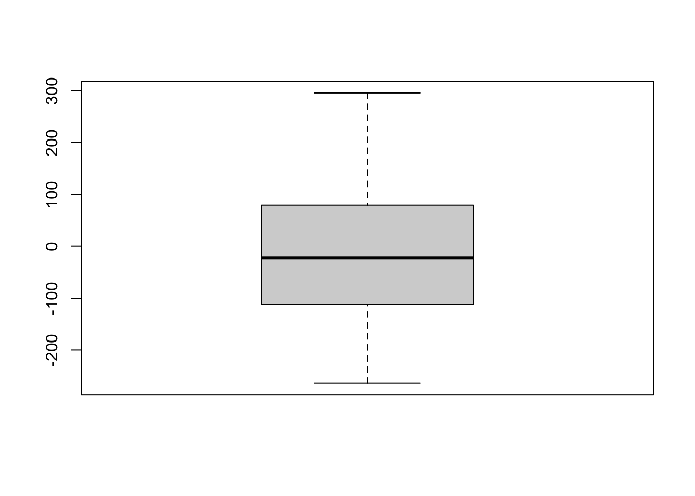
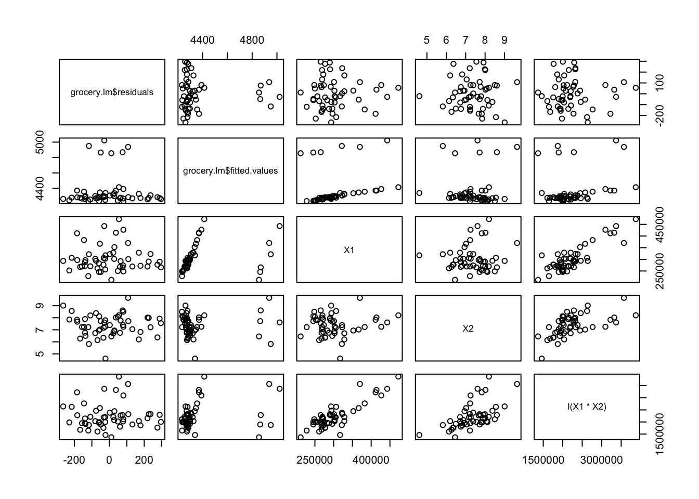
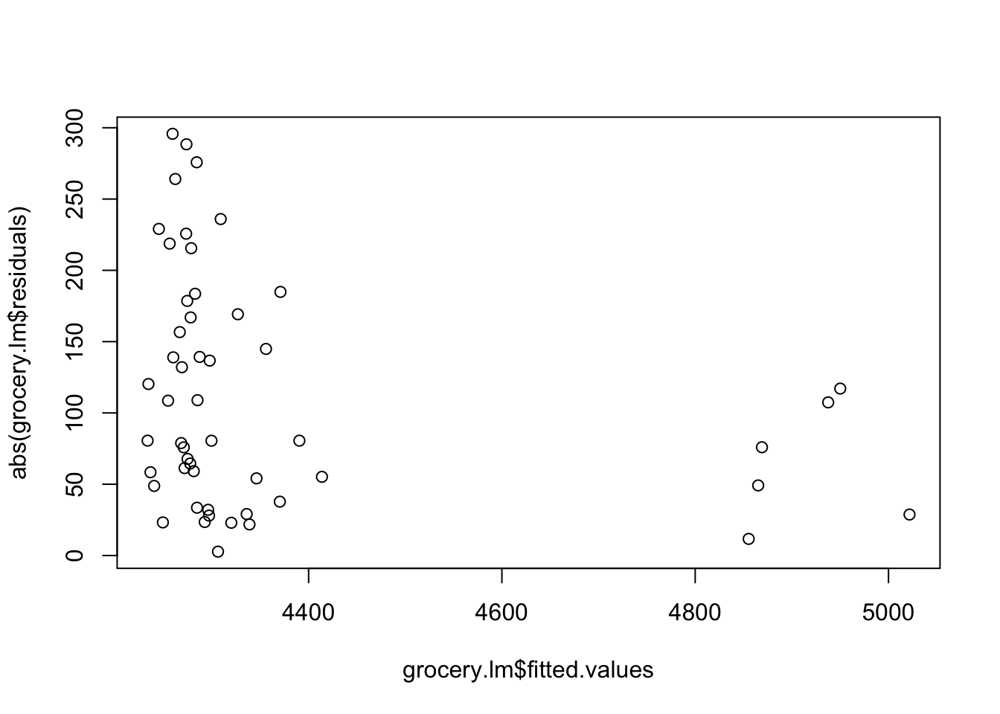
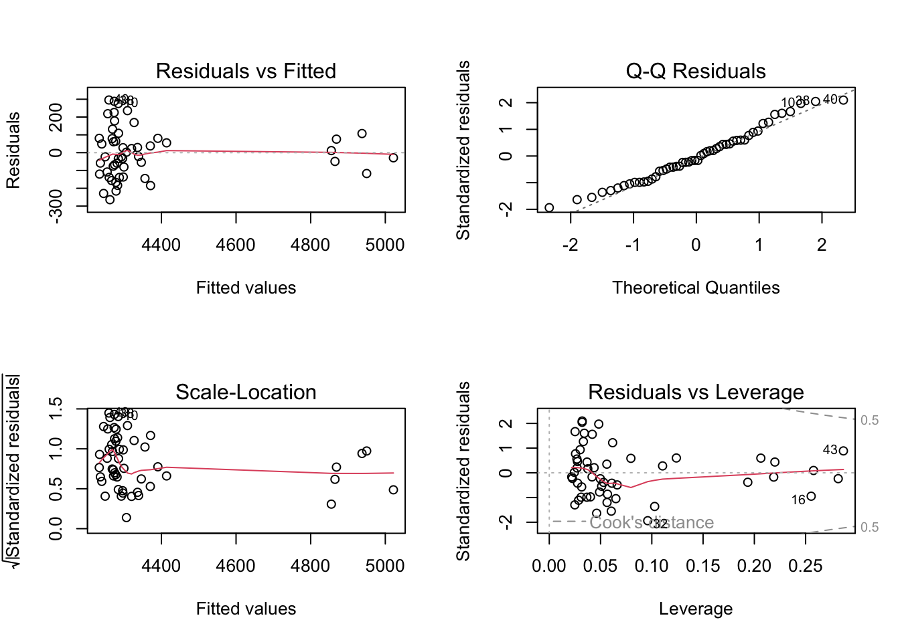
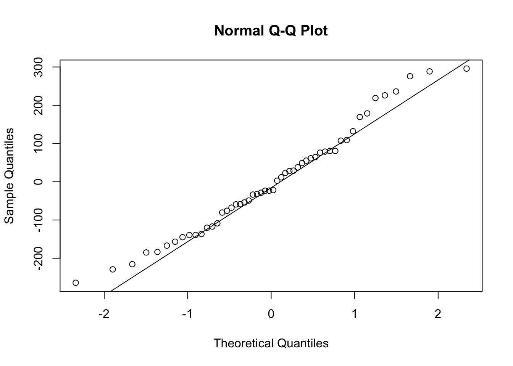
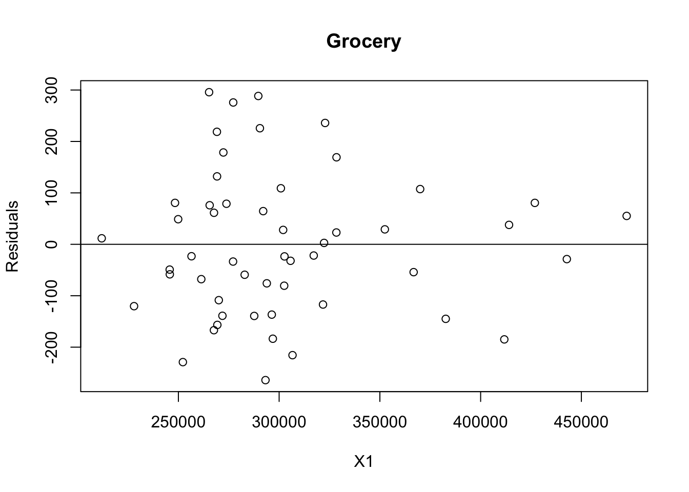
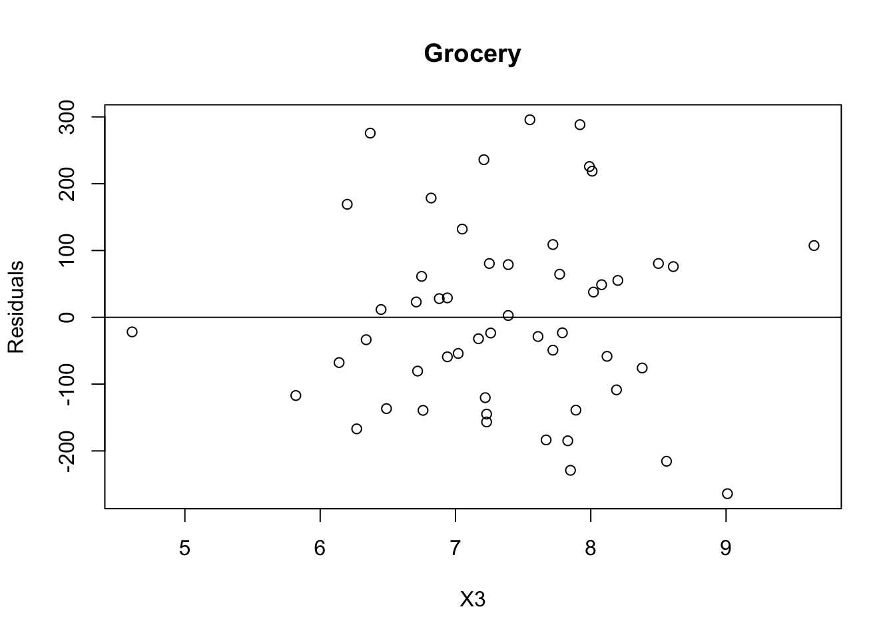

grocery <- read.csv('grocery.csv')Chapter Six HW
grocery Y X1 X2 X3
1 4264 305657 7.17 0
2 4496 328476 6.20 0
3 4317 317164 4.61 0
4 4292 366745 7.02 0
5 4945 265518 8.61 1
6 4325 301995 6.88 0
7 4110 269334 7.23 0
8 4111 267631 6.27 0
9 4161 296350 6.49 0
10 4560 277223 6.37 0
11 4401 269189 7.05 0
12 4251 277133 6.34 0
13 4222 282892 6.94 0
14 4063 306639 8.56 0
15 4343 328405 6.71 0
16 4833 321773 5.82 1
17 4453 272319 6.82 0
18 4195 293880 8.38 0
19 4394 300867 7.72 0
20 4099 296872 7.67 0
21 4816 245674 7.72 1
22 4867 211944 6.45 1
23 4114 227996 7.22 0
24 4314 248328 8.50 0
25 4289 249894 8.08 0
26 4269 302660 7.26 0
27 4347 273848 7.39 0
28 4178 245743 8.12 0
29 4333 267673 6.75 0
30 4226 256506 7.79 0
31 4121 271854 7.89 0
32 3998 293225 9.01 0
33 4475 269121 8.01 0
34 4545 322812 7.21 0
35 4016 252225 7.85 0
36 4207 261365 6.14 0
37 4148 287645 6.76 0
38 4562 289666 7.92 0
39 4146 270051 8.19 0
40 4555 265239 7.55 0
41 4365 352466 6.94 0
42 4471 426908 7.25 0
43 5045 369989 9.65 1
44 4469 472476 8.20 0
45 4408 414102 8.02 0
46 4219 302507 6.72 0
47 4211 382686 7.23 0
48 4993 442782 7.61 1
49 4309 322303 7.39 0
50 4499 290455 7.99 0
51 4186 411750 7.83 0
52 4342 292087 7.77 06.10
a Fit regression model (6.5) to the data for three predictor variables. State the estimated regression function. How are \(b_{1}\), \(b_{1}\), \(b_{1}\) here?
grocery.lm <- lm(Y ~ X1 + X2 + X3, data = grocery)grocery.lm
Call:
lm(formula = Y ~ X1 + X2 + X3, data = grocery)
Coefficients:
(Intercept) X1 X2 X3
4.150e+03 7.871e-04 -1.317e+01 6.236e+02 summary(grocery.lm)
Call:
lm(formula = Y ~ X1 + X2 + X3, data = grocery)
Residuals:
Min 1Q Median 3Q Max
-264.05 -110.73 -22.52 79.29 295.75
Coefficients:
Estimate Std. Error t value Pr(>|t|)
(Intercept) 4.150e+03 1.956e+02 21.220 < 2e-16 ***
X1 7.871e-04 3.646e-04 2.159 0.0359 *
X2 -1.317e+01 2.309e+01 -0.570 0.5712
X3 6.236e+02 6.264e+01 9.954 2.94e-13 ***
---
Signif. codes: 0 '***' 0.001 '**' 0.01 '*' 0.05 '.' 0.1 ' ' 1
Residual standard error: 143.3 on 48 degrees of freedom
Multiple R-squared: 0.6883, Adjusted R-squared: 0.6689
F-statistic: 35.34 on 3 and 48 DF, p-value: 3.316e-12b. Obtain the residuals and prepare a box plot of the residuals. What information does this plot provide?
grocery.lm$residuals 1 2 3 4 5 6
-32.063483 169.205091 -21.825426 -54.119552 75.933724 28.000660
7 8 9 10 11 12
-156.684401 -166.983381 -136.691019 275.783546 132.059842 -33.540598
13 14 15 16 17 18
-59.173782 -215.535629 22.975644 -117.076677 178.568096 -75.863154
19 20 21 22 23 24
108.947943 -183.565972 -49.165210 11.662167 -120.279732 80.569854
25 26 27 28 29 30
48.807558 -23.519661 78.869281 -58.398630 61.303251 -23.214763
31 32 33 34 35 36
-138.978271 -264.053024 218.752742 235.960794 -229.055311 -67.763118
37 38 39 40 41 42
-139.284659 288.397234 -108.609359 295.751820 29.065887 80.555515
43 44 45 46 47 48
107.399309 55.197555 37.772702 -80.508888 -144.901536 -28.753312
49 50 51 52
2.731302 225.697849 -184.877629 64.516810 boxplot(grocery.lm$residuals)
pairs(~grocery.lm$residuals+grocery.lm$fitted.values+X1+X2+I(X1*X2), data = grocery)
plot(abs(grocery.lm$residuals)~grocery.lm$fitted.values, data = grocery)
c. Plot the residuals against \(\hat Y\), \(X_{1}\), \(X_{2}\), \(X_{3}\), and \(X_{1}X_{2}\) on separate graphs. Also prepare a normal probability plot. Interpret the plots and summarize your findings.
par(mfrow = c(2, 2))
plot(grocery.lm)
qqnorm(grocery.lm$residuals)
qqline(grocery.lm$residuals)
shapiro.test(grocery.lm$residuals)
Shapiro-Wilk normality test
data: grocery.lm$residuals
W = 0.97575, p-value = 0.3644lillie.test(grocery.lm$residuals)
Lilliefors (Kolmogorov-Smirnov) normality test
data: grocery.lm$residuals
D = 0.08161, p-value = 0.5245d. Prepare a time plot of the residuals. Is there any indication that the error term are correlated?
grocery.resid <- resid(grocery.lm)grocery.resid 1 2 3 4 5 6
-32.063483 169.205091 -21.825426 -54.119552 75.933724 28.000660
7 8 9 10 11 12
-156.684401 -166.983381 -136.691019 275.783546 132.059842 -33.540598
13 14 15 16 17 18
-59.173782 -215.535629 22.975644 -117.076677 178.568096 -75.863154
19 20 21 22 23 24
108.947943 -183.565972 -49.165210 11.662167 -120.279732 80.569854
25 26 27 28 29 30
48.807558 -23.519661 78.869281 -58.398630 61.303251 -23.214763
31 32 33 34 35 36
-138.978271 -264.053024 218.752742 235.960794 -229.055311 -67.763118
37 38 39 40 41 42
-139.284659 288.397234 -108.609359 295.751820 29.065887 80.555515
43 44 45 46 47 48
107.399309 55.197555 37.772702 -80.508888 -144.901536 -28.753312
49 50 51 52
2.731302 225.697849 -184.877629 64.516810 plot(grocery$X1, grocery.resid,
ylab = "Residuals", xlab = "X1",
main = "Grocery")
abline(0, 0) # the horizon
plot(grocery$X2, grocery.resid,
ylab = "Residuals", xlab = "X2",
main = "Grocery")
abline(0, 0) # the horizonplot(grocery$X2, grocery.resid,
ylab = "Residuals", xlab = "X3",
main = "Grocery")
abline(0, 0) # the horizon
6.11
a. Test whether there is a regression relation, using level of significance 0.05. State the alternatives, decision rule, and conclusion. What does your result imply \(B_{1}\), \(B_{2}\), and \(B_{3}\)? What is the \(P\)-value of the test?
summary(grocery.lm)
Call:
lm(formula = Y ~ X1 + X2 + X3, data = grocery)
Residuals:
Min 1Q Median 3Q Max
-264.05 -110.73 -22.52 79.29 295.75
Coefficients:
Estimate Std. Error t value Pr(>|t|)
(Intercept) 4.150e+03 1.956e+02 21.220 < 2e-16 ***
X1 7.871e-04 3.646e-04 2.159 0.0359 *
X2 -1.317e+01 2.309e+01 -0.570 0.5712
X3 6.236e+02 6.264e+01 9.954 2.94e-13 ***
---
Signif. codes: 0 '***' 0.001 '**' 0.01 '*' 0.05 '.' 0.1 ' ' 1
Residual standard error: 143.3 on 48 degrees of freedom
Multiple R-squared: 0.6883, Adjusted R-squared: 0.6689
F-statistic: 35.34 on 3 and 48 DF, p-value: 3.316e-12Anova(grocery.lm, type = 'III')Anova Table (Type III tests)
Response: Y
Sum Sq Df F value Pr(>F)
(Intercept) 9245215 1 450.2861 < 2.2e-16 ***
X1 95707 1 4.6614 0.03588 *
X2 6675 1 0.3251 0.57123
X3 2034514 1 99.0905 2.941e-13 ***
Residuals 985530 48
---
Signif. codes: 0 '***' 0.001 '**' 0.01 '*' 0.05 '.' 0.1 ' ' 1\(H_{0}\): \(B_{1}\) = \(B_{2}\) = \(B_{3}\)
\(H_{a}\): not all \(B_{k}\) = 0 (k = 1, 2, 3).
\(MSR\) = 725,535
\(MSE\) = 20,531
\(F^{*}\) = 725,535/531.9 = 35.337
\(F(0.95; 3, 48)\) = 2.79806.
If \(F^{*}\) < 2.79806 conclude \(H_{0}\), otherwise \(H_{a}\).
Conclude \(H_{a}\). \(P\)-value = < 0.05.
b. Estimate \(B_{1}\) and \(B_{3}\) jointly by the Bonferroni procedure, using a 95 percent family confidence coefficient. Interpret your result.
confint.lm(grocery.lm) 2.5 % 97.5 %
(Intercept) 3.756677e+03 4.543098e+03
X1 5.409544e-05 1.520065e-03
X2 -5.959506e+01 3.326302e+01
X3 4.976064e+02 7.495025e+02c. Calculate the coefficient of multiple determination \(R^{2}\). How is this measure interpreted here?
summary(grocery.lm)
Call:
lm(formula = Y ~ X1 + X2 + X3, data = grocery)
Residuals:
Min 1Q Median 3Q Max
-264.05 -110.73 -22.52 79.29 295.75
Coefficients:
Estimate Std. Error t value Pr(>|t|)
(Intercept) 4.150e+03 1.956e+02 21.220 < 2e-16 ***
X1 7.871e-04 3.646e-04 2.159 0.0359 *
X2 -1.317e+01 2.309e+01 -0.570 0.5712
X3 6.236e+02 6.264e+01 9.954 2.94e-13 ***
---
Signif. codes: 0 '***' 0.001 '**' 0.01 '*' 0.05 '.' 0.1 ' ' 1
Residual standard error: 143.3 on 48 degrees of freedom
Multiple R-squared: 0.6883, Adjusted R-squared: 0.6689
F-statistic: 35.34 on 3 and 48 DF, p-value: 3.316e-12